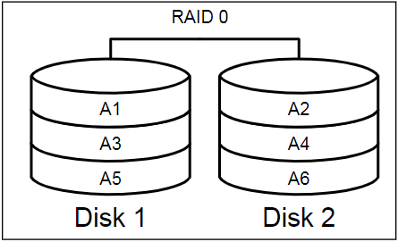

Capítulo 2: Configuração de E/S de disco
A configuração inadequada do hardware é uma causa comum de problemas de desempenho e escalabilidade do SQL Server. Se você tentar executar o SQL Server em hardware de estação de trabalho, enfrentará problemas, mas mesmo em hardware de servidor, problemas de desempenho podem e ocorrerão se um ou mais componentes de hardware tiverem sido dimensionados e configurados de maneira inadequada para a carga de trabalho do SQL Server.
O SQL Server é muito diferente de outras aplicações em termos de suas características de uso de disco e requisitos de armazenamento, e o subsistema de disco é um dos componentes de hardware mais comumente subdimensionados e mal configurados para o SQL Server. Frequentemente, a carga de trabalho de E/S pode ser substancialmente reduzida por medidas como o uso apropriado de indexação ou garantindo que as consultas não leiam mais dados do que estritamente necessário. No entanto, se os problemas de E/S persistirem, indicados, por exemplo, por valores de latência elevados para os contadores PerfMon Physical Disk\Disk sec/Reads e Physical Disk\Disk sec/Writes, ou tipos de espera relacionados a E/S específicos nas DMVs, então você precisará solucionar problemas em seu sistema de E/S de disco. Essa tarefa pode ser relativamente simples ou extremamente complexa, dependendo se você está usando armazenamento simples, conectado diretamente, ou uma vasta e complexa Rede de Área de Armazenamento (SAN) em toda a empresa.
Este capítulo discute os fundamentos da configuração do subsistema de I/O de disco para o SQL Server, e os problemas mais comuns associados a configurações de disco incorretamente dimensionadas ou projetadas incorretamente, abordando tópicos como:
- Escolha apropriada do nível RAID de hardware - existem muitas configurações possíveis, e a escolha certa dependerá em grande parte da natureza da carga de trabalho do SQL Server.
- Capacidade de armazenamento versus throughput - 1 TB de armazenamento de banco de dados pode ser satisfeito com um único disco de 1 TB, mas o throughput e o desempenho de E/S são provavelmente pobres.
- Tipo e distribuição da carga de trabalho - considerações específicas para arquivos de dados, log e tempdb.
- Problemas comuns de E/S de disco - como desalinhamento de partição de disco e problemas de largura de banda de rede em SANs.
De longe, a melhor maneira de lidar com problemas de E/S de disco é trabalhar o mais duro possível durante a fase de design do sistema para evitá-los. A única maneira de ter certeza de que seu subsistema de E/S de disco atenderá aos seus requisitos de desempenho e taxa de transferência de E/S é entender quais são esses requisitos e testar o desempenho do seu subsistema de disco sob cargas realistas, usando uma ferramenta como o SQLIO ou IOmeter.
Configuração de disco: Considerações Básicas
A escalabilidade da memória melhorou substancialmente nos últimos anos. É relativamente barato fornecer mais capacidade de RAM para o SQL Server, para ajudar a minimizar a entrada/saída do disco. Da mesma forma, com processadores potentes com oito ou até doze núcleos físicos surgindo no mercado, muitos servidores modernos frequentemente possuem capacidade de CPU ociosa que, novamente, pode ser usada para ajudar a reduzir a pressão no sistema de entrada/saída do disco.
O tema comum aqui parece ser que o subsistema de disco precisa de toda a ajuda possível. Certamente, ao longo de um período de tempo semelhante, as melhorias de desempenho nos tradicionais discos rígidos magnéticos, que ainda sustentam a grande maioria das instalações do SQL Server, foram relativamente modestas em comparação com as melhorias em memória e CPU. Como tal, é preciso ter muito cuidado ao provisionar e configurar o hardware do subsistema de disco para instalações do SQL Server, a fim de garantir que atenda aos requisitos de carga de I/O do banco de dados do SQL Server que roda nele.
Esta seção irá revisar brevemente algumas das principais considerações ao dimensionar e configurar o subsistema de disco e abordaremos cada um desses problemas conforme avançamos no capítulo.
Tamanho do disco vs. throughput do disco
Um dos erros mais comuns cometidos ao planejar e construir um subsistema de E/S de disco para o SQL Server é pensar puramente em termos de quanto espaço de disco é necessário, em vez do throughput do disco necessário para suportar a carga de trabalho transacional no banco de dados.
Para discos rígidos convencionais que possuem um prato rotativo, os fatores limitantes para desempenho e taxa de transferência, expressos em IOPS e MB/s, são:
- rotações por minuto - a velocidade com que o prato gira para ler dados do disco.
- tempo de busca em ms - o tempo necessário para reposicionar a cabeça do disco para localizar dados no disco.
Se você precisa de 1 TB de armazenamento para um banco de dados, você pode atender a essa demanda com um único disco rígido de 1 TB, mas você descobrirá que tanto a latência de rotação quanto a latência da cabeça de disco serão altas, e o desempenho e a taxa de transferência de E/S correspondentes serão baixos. Tal configuração de disco único seria desaconselhável, independentemente do tipo de carga de trabalho suportada, mas seria especialmente problemática quando a carga de trabalho gerasse um grande número de operações de leitura/gravação aleatórias (como seria típico para uma carga de trabalho OLTP), resultando em graves problemas de latência da cabeça de disco.
A maneira de mitigar problemas de latência de disco e melhorar significativamente o desempenho e a taxa de transferência do disco é distribuir os dados em vários discos menores configurados em uma das várias configurações RAID disponíveis (discutidas posteriormente), que podem ser apresentados ao Windows como um único dispositivo de hardware.
Claro, isso pode levar a um aumento substancial na complexidade do sistema de armazenamento, e significa que o desempenho e o throughput do I/O do disco final são afetados, não apenas pelas características físicas do disco, mas também por questões como a configuração RAID escolhida, a arquitetura da matriz de armazenamento (DAS ou SAN, conforme discutido posteriormente), e o desempenho de outros componentes da matriz de armazenamento, como os adaptadores de barramento do host ou controladores RAID, e assim por diante.
Unidades de estado sólido
Os discos de estado sólido modernos não possuem peças móveis, portanto, não estão sujeitos às mesmas limitações de throughput dos discos convencionais, e estão gradualmente empurrando o potencial de IOPS além das capacidades da maioria das grandes matrizes de discos convencionais, em um único dispositivo de hardware. Eles ainda são tecnologia relativamente nova e não são atualmente amplamente utilizados em sistemas de banco de dados transacionais, devido a considerações de custo e tempo de vida, e não são abordados mais neste capítulo. No entanto, eles podem redefinir o espaço de armazenamento no futuro próximo.
Leitura aleatória versus leitura sequencial
O bloco básico no SQL Server é conhecido como uma página, que tem tamanho de 8 KB. Para minimizar o número de solicitações de I/O ao ler dados do disco, o SQL Server usa um mecanismo de leitura antecipada que pode ler um número de páginas contíguas, até 128 páginas na edição Standard e 1.024 páginas na edição Enterprise, em uma única operação de I/O.
Ao mesmo tempo, em vez de escrever continuamente todas as modificações de dados no disco, as alterações são feitas nas páginas de dados do buffer pool, que são coletadas em blocos contíguos e gravadas no disco em uma única operação de E/S, no CHECKPOINT, depois que as descrições das mudanças foram registradas no log de transações.
As bases de dados do SQL Server realizam uma mistura de operações de I/O aleatórias e sequenciais, dependendo das atividades que estão sendo realizadas. I/O sequencial é qualquer operação em que os blocos podem ser lidos ou gravados no disco sem ter que reposicionar a cabeça do disco. O I/O sequencial é usado pelo SQL Server para operações de leitura antecipada e para todas as operações de log de transação, e é o tipo mais rápido de I/O que pode ser realizado usando discos convencionais. I/O aleatório é qualquer operação em que a cabeça do disco no drive tem que mudar de posição no prato, incorrendo em latência de busca como parte da operação, o que reduz o desempenho e o número de operações em comparação com o I/O sequencial. Operações de leitura em geral, especialmente em sistemas OLTP, são operações de I/O aleatórias, lendo blocos relativamente pequenos de páginas sequencialmente como parte de solicitações aleatórias maiores de I/O.
Por esse motivo, a configuração de disco escolhida deve ser fortemente influenciada pelo tipo de arquivo armazenado nos discos e pelo tipo de atividade de I/O a que ele é submetido. Em resumo, para um desempenho ótimo, o subsistema de E/S de disco para os arquivos de log deve ser configurado de forma diferente do subsistema de E/S de disco para os arquivos de dados.
A configuração de disco para os arquivos de dados do banco de dados deve ser otimizada para E/S de leitura aleatória de 64 KB e o desempenho deve ser testado para tamanhos de E/S de 8 KB, 64 KB, 128 KB e 256 KB para determinar a capacidade potencial de desempenho e throughput da configuração. Se o servidor estiver sendo usado principalmente para um grande armazém de dados ou um banco de dados de sistema de suporte à decisão (DSS), o subsistema de E/S deve ser testado para tamanhos de E/S maiores de até 1024 KB para operações de leitura adiante, dependendo do design do banco de dados e de como ele está sendo usado. No entanto, o log de transações no SQL Server realiza principalmente operações de gravação sequencial em tamanhos aleatórios de até 60 KB.
Escolhendo o nível correto de RAID
RAID, sigla para Redundant Array of Independent Disks, é a tecnologia usada para atingir os seguintes objetivos:
- aumentar os níveis de desempenho de I/O, medidos em Operações de Entrada/Saída por Segundo (IOPS), que é aproximadamente (MB/seg / tamanho de IO em KB)1024
- aumentar os níveis de throughput de I/O, medidos em Megabytes por Segundo (MB/seg) que é aproximadamente (IOPStamanho de IO em KB)/1024
- aumentar a capacidade de armazenamento disponível em um único dispositivo lógico - ainda não é possível comprar um único disco de 5 TB, mas você pode ter um disco de 5 TB no Windows, por exemplo, usando RAID para distribuir seis unidades de 1 TB em um array RAID5
- obter redundância de dados através do armazenamento de informações de paridade em vários discos, ou usando espelhamento dos discos físicos no array.
A escolha do nível de RAID depende fortemente da natureza da carga de trabalho que o array de discos deve suportar. Por exemplo, como discutido anteriormente, a diferença na natureza das cargas de trabalho de I/O para os arquivos de dados e para os arquivos de log significa que diferentes configurações de RAID podem ser aplicáveis em cada caso.
Os arquivos de dados estão sujeitos principalmente a atividade de leitura aleatória e, devido à forma como o SQL Server agrupa as operações de gravação em disco com o CHECKPOINT, isso permite o uso de níveis RAID que trocam o desempenho de gravação por um desempenho de leitura mais alto e melhor uso da capacidade de armazenamento em disco disponível. A atividade sequencial para os arquivos de log é principalmente para atividades de gravação durante os flushes do buffer de log, tornando o desempenho de gravação uma consideração muito mais crítica do que pode ser para os arquivos de dados.
Escolher o nível RAID apropriado é frequentemente uma tarefa difícil e, a menos que o dinheiro não seja um problema, muitas vezes envolve algum tipo de compromisso entre fatores como o custo geral da solução, capacidade de armazenamento, throughput de disco e o grau de "proteção" em caso de falha de um dos discos na matriz.
Existem vários níveis RAID disponíveis no mercado, cada um dos quais possui seus próprios custos e benefícios associados. Nas seções a seguir, examinaremos os níveis RAID padrão mais comuns (0, 1, 5 e 6), bem como os níveis RAID aninhados, como RAID 0+1 ou 1+0, em que uma matriz RAID é usada dentro de uma segunda matriz RAID. Explicaremos brevemente como funciona cada nível e seus méritos e desvantagens relativos para sistemas SQL Server.
Uma breve visão geral das configurações RAID
Os níveis RAID mais comuns usados com o SQL Server são RAID 1, 5, 6 e 1+0, já que estes garantem que os dados armazenados na matriz não serão perdidos ou danificados/corrompidos se um dos discos da matriz falhar catastroficamente. A proteção dos dados armazenados dentro do SQL Server deve ser considerada como o fator mais importante na seleção do nível RAID, seguida de perto pelo desempenho desejado para a característica da matriz de disco. A matriz de disco mais rápida do mundo não será útil se perder todas as informações da organização em uma única falha.
RAID 0
RAID 0, mais conhecido como striping, oferece melhorias nas taxas de I/O (em termos de IOPS) através do fracionamento dos dados em várias unidades, permitindo que as operações de leitura e gravação sejam compartilhadas entre as unidades dentro do conjunto. A figura 2.1 mostra uma implementação RAID 0 onde A1, A2 e assim por diante representam segmentos de dados sequenciais logicamente. Podemos ver que, embora A2 venha após A1 sequencialmente, ele é armazenado em uma unidade separada, permitindo que vários segmentos sejam acessados simultaneamente.
Figura 2.1: RAID 0.
Este nível de RAID fornece o melhor desempenho tanto para operações de leitura quanto de gravação, porém não oferece redundância ou proteção contra perda de dados. No caso de falha de um único disco na matriz, todos os dados são perdidos. Portanto, este nível de RAID não é adequado para implementações do SQL Server.
RAID 1
RAID 1, mais comumente conhecido como espelhamento, oferece proteção contra a perda de dados de um único disco, espelhando as gravações em um segundo disco, como mostrado na Figura 2.2. Uma configuração RAID 1 fornece redundância, mas não oferece desempenho adicional de gravação para o sistema, uma vez que a taxa máxima de transferência para a matriz é limitada à capacidade de E/S de um único disco. Se você tiver uma configuração de duplicação (uma extensão do espelhamento em que ambos os discos do espelho podem ser lidos simultaneamente), teoricamente é possível obter um benefício de desempenho de leitura. Na prática, no entanto, as melhorias são altamente variáveis, embora geralmente pequenas, e dependentes da implementação de hardware.
Embora o RAID 1 forneça redundância de dados, protegendo-o contra a perda de um único disco, ele efetivamente duplica o custo de armazenamento.
Figura 2.2: Implementação RAID 1.
Para demandas de E/S baixas, o RAID 1 pode oferecer um desempenho aceitável para arquivos de dados do SQL Server, mas geralmente não atende aos requisitos de IOPS associados a operações intensas e aleatórias de leitura, mesmo em bancos de dados de tamanho moderado. Na maioria dos casos, no entanto, o RAID 1 pode ser usado para armazenar um único log de transações. A natureza sequencial da atividade do log de transações significa que a cabeça de leitura/gravação de cada unidade é relativamente estática e se move em um varrimento progressivo pela cabeça do disco conforme as gravações ocorrem. Isso minimiza a latência de E/S e permite IOPS significativamente mais altos do que é possível para operações de E/S aleatórias.
Se vários arquivos de log de transações forem colocados em um único conjunto RAID 1, o efeito líquido da atividade combinada de E/S sequencial para cada arquivo será uma E/S aleatória no nível físico, e haverá maior latência devido ao movimento da cabeça do disco para executar operações em cada um dos arquivos que estão sendo gravados sequencialmente.
RAID 5 (and 6)
O RAID 5 é comumente conhecido como "striping com paridade"; os dados são distribuídos em múltiplos discos, como no RAID 0, mas os dados de paridade são armazenados para fornecer proteção contra falha de um único disco. O número mínimo de discos necessários para um conjunto RAID 5 é três. Os blocos de paridade contendo os dados de paridade são distribuídos em intervalos entre as faixas dentro do conjunto, conforme mostrado na Figura 2.3. Por exemplo, o segmento Ap armazena os dados de paridade resultantes da comparação dos dados nos segmentos A1 e
Figura 2.3: Implementação RAID 5.
Observe que a capacidade total de armazenamento de um conjunto RAID 5 é (n-1) * tamanho do disco, onde n é o número de discos. Portanto, para um conjunto RAID 5 de (digamos) 3 discos de 100 GB, teríamos 200 GB de armazenamento de dados. Para um conjunto de 5 discos, teríamos 400 GB de armazenamento de dados, e assim por diante.
Dessa forma, o RAID 5 oferece redundância com uma redução mínima na capacidade de armazenamento, o que é uma das principais razões para sua popularidade. A distribuição dos dados em vários discos melhora o desempenho de leitura, mas a necessidade de manter os dados de paridade implica em uma penalidade de desempenho para operações de gravação; por exemplo, cada vez que os dados são atualizados no segmento A1, os dados de paridade devem ser recalculados e regravados. Além disso, se um dos discos de um conjunto RAID 5 falhar fisicamente, o desempenho do conjunto fica comprometido devido às comparações de paridade que precisam ser realizadas para ler os dados armazenados no conjunto. O nível de degradação depende do número de discos configurados no conjunto; à medida que o número de discos aumenta, o número de comparações aumenta, reduzindo ainda mais o desempenho.
Para bancos de dados com alta carga de leitura, mas baixa carga de gravação, o RAID 5 pode ser a opção ideal para os arquivos de dados. No entanto, em situações em que o banco de dados sofre intensa atividade de gravação, o custo dos cálculos de paridade pode reduzir o desempenho do sistema. Por essa mesma razão, o RAID 5 não é recomendado para os arquivos de log de transações do banco de dados, que executam principalmente gravações sequenciais e exigem a menor latência possível para gravação.
O RAID 6 é uma extensão do RAID 5, mas em vez de um único bit de paridade distribuída, ele utiliza dois bits de paridade distribuída, em que os dados de paridade calculados são armazenados em dois discos separados no conjunto, permitindo uma falha dupla de disco no conjunto, enquanto ainda protege os dados. Por exemplo, na Figura 2.4, os dados de paridade resultantes da comparação dos dados nos segmentos A1 e A2 são armazenados tanto nos segmentos de dados de paridade Aq quanto Ap.
Figura 2.4: Implementação do RAID 6 para um conjunto de 4 discos.
No RAID 6, a capacidade total de armazenamento é (n-2) * tamanho do disco, portanto, para esse conjunto de 4 discos, perdemos metade do espaço em disco para o armazenamento dos dados de paridade. Além disso, o impacto no desempenho dos cálculos de paridade será relativamente alto. Por esses motivos, o RAID 10 é uma configuração RAID melhor para suportar a perda de dois discos quando apenas quatro discos estão no conjunto.
A Figura 2.5 mostra uma implementação mais típica do RAID 6, envolvendo um conjunto de 7 discos.
Figura 2.5: Implementação do RAID 6 para um conjunto de 7 discos.
O RAID 6 é comum em aplicações de Storage Area Network (SAN), onde o número de discos em um único conjunto é maior do que na maioria das aplicações de Direct Attached Storage (DAS), aumentando a possibilidade de múltiplas falhas de disco durante o período em que um único disco pode estar offline. O RAID 6 possui uma penalidade de desempenho semelhante ao RAID 5 para operações de gravação, uma vez que o cálculo do bit de paridade afeta o desempenho.
RAID 10
O RAID 10, ou RAID 1+0, é um nível de RAID aninhado conhecido como "par espelhado listrado". Ele fornece redundância ao primeiro espelhar cada disco, usando o RAID 1, e depois listar esses discos espelhados, com RAID 0, para melhorar o desempenho. Há um aumento significativo no custo monetário associado a essa configuração, uma vez que apenas metade do espaço em disco está disponível para uso. No entanto, essa configuração oferece a melhor configuração de redundância, pois, potencialmente, permite várias falhas de disco enquanto ainda mantém o sistema em operação, sem degradar o desempenho do sistema.
Na configuração mostrada na Figura 2.6, cada um dos pares espelhados RAID 1 poderia suportar a falha de um único disco e o conjunto continuaria operacional. No entanto, se ambos os discos em um único par espelhado RAID 1 falhassem ao mesmo tempo, o sistema deixaria de ser operacional.
Figure 2.6: Implementação RAID 1+0.
Como não há cálculos de paridade a serem realizados, o RAID 1+0 é a configuração de RAID mais rápida para gravações que também oferece redundância, proporcionando um desempenho próximo ou equivalente ao desempenho de uma configuração RAID 0. No entanto, em termos do número de discos que compõem o conjunto, o desempenho de leitura geralmente será menor do que um conjunto RAID 5 configurado com o mesmo número de discos físicos.
RAID 01
RAID 01 ou RAID 0+1, é um nível de RAID aninhado também conhecido como "pares espelhados de discos listrados". Em uma configuração RAID 0+1, os níveis aninhados são o oposto do RAID 1+0, em que os discos são primeiro listrados em um RAID 0 e depois espelhados usando RAID 1. No entanto, esse tipo de configuração permite apenas a perda de um único disco de um lado do conjunto, uma vez que uma falha de disco em um conjunto RAID 0 causa a falha desse conjunto. A perda de um único disco em ambos os conjuntos listrados RAID 0 resultaria em perda total de dados. O maior risco de perda de dados no RAID 01 significa que, na maioria dos casos, o RAID 1+0 é preferível para instalações do SQL Server.
Figure 2.7: Implementação RAID 0+1.
Considerações sobre o tamanho do disco e taxa de transferência
Os discos rígidos modernos são muito maiores em tamanho do que os disponíveis anteriormente, possibilitando maiores capacidades com menos discos. No entanto, como discutido anteriormente, a compra de um pequeno número de discos grandes pode não ser a melhor opção em termos de desempenho de E/S e taxa de transferência. Por exemplo, considere um banco de dados com tamanho de 400 GB que realiza uma mistura equilibrada de operações de leitura e gravação aleatórias. O número de possíveis configurações de RAID e discos para esse banco de dados excede o espaço disponível para todo este livro. No entanto, algumas configurações potenciais são as seguintes:
- RAID 1 usando 2 discos de 600 GB e 15.000 RPM.
- RAID 5 usando 3 discos de 300 GB e 15.000 RPM.
- RAID 5 usando 5 discos de 146 GB e 15.000 RPM.
- RAID 10 usando 8 discos de 146 GB e 15.000 RPM.
- RAID 10 usando 14 discos de 73 GB e 15.000 RPM.
Com base nas configurações de RAID acima, as seguintes taxas de transferência de E/S seriam teoricamente possíveis com base em uma carga de trabalho de E/S aleatória de 64 KB para o SQL Server:
- 185 IOPS a 11,5 MB/s
- 222 IOPS a 14 MB/s
- 345 IOPS a 22 MB/s
- 816 IOPS a 51 MB/s
- 1609 IOPS a 101 MB/s
Esperançosamente, a mensagem está clara: o número de cabeças de disco e a configuração do RAID terão um impacto direto e dramático na capacidade potencial de E/S do conjunto RAID.
No entanto, lembre-se de que esses números são teóricos, o que significa que são baseados apenas na capacidade potencial de E/S dos discos em uma determinada configuração. Eles não levam em consideração outros fatores que podem e terão impacto na taxa de transferência geral, incluindo:
- Tamanho e configuração do cache do controlador RAID para leitura e gravação em cache, que podem melhorar a pré-busca de leitura se mais cache for dedicado a leituras, ou absorver rajadas intensas de atividade de gravação se mais cache for dedicado a gravações.
- Tamanho de stripe do RAID, que determina a quantidade de dados que é gravada ou lida de um único disco em uma stripe antes de avançar para o próximo disco na stripe.
- Alinhamento de partição, que garante que o deslocamento inicial de uma partição de disco esteja alinhado com o tamanho de stripe do RAID e o deslocamento do setor para o disco, de modo que as operações de leitura e gravação não cruzem limites de setor, incorrendo em uma operação adicional de E/S para ser concluída. Consulte "Alinhamento incorreto de partição", mais adiante neste capítulo, para obter mais detalhes.
- Tamanhos de unidade de alocação do formato NTFS; o valor padrão de 4 KB para NTFS é bom para servidores de arquivos e unidades do sistema operacional, mas não é adequado para arquivos de dados do banco de dados, que têm um melhor desempenho usando uma unidade de alocação de 64 KB.
A única maneira de ter certeza de que a configuração de disco selecionada lidará adequadamente com a carga de trabalho imposta por seus bancos de dados é realizar testes adequados do subsistema de E/S antes de usá-lo. Nunca confie em cálculos teóricos para os valores de IOPS ou taxa de transferência em MB/s. Você precisa simular uma carga de trabalho de E/S realista, usando vários processos, e obter os números reais.
Existem várias ferramentas disponíveis para medir a taxa de transferência de E/S de uma determinada configuração, mas as duas ferramentas mais comuns usadas para testar as configurações de armazenamento para o SQL Server são o SQLIO e o IOmeter.
O SQLIO é um dos piores nomes para uma ferramenta, pois leva à ideia equivocada de que ele simula a carga de trabalho de E/S do SQL Server. A verdade é que essa ferramenta não tem absolutamente nada a ver com o SQL Server; é apenas uma ferramenta de estresse de E/S que gera operações de E/S com base nos parâmetros de comando fornecidos à ferramenta. O IOmeter também é uma ferramenta de teste de estresse de E/S, originalmente desenvolvida pela Intel e posteriormente lançada como um projeto de código aberto. Das duas ferramentas, o IOmeter é o mais flexível e pode gerar cargas de trabalho de E/S mistas que se aproximam mais do que poderia ser gerado pelo SQL Server. O IOmeter também possui uma interface gráfica do usuário que é usada para configurar os testes e monitorar seu progresso.
Baixando o SQLIO ou IOmeter
O SQLIO pode ser baixado gratuitamente no site da Microsoft em http://www.microsoft.com/download/en/details.aspx?id=20163.
O IOmeter pode ser baixado gratuitamente em http://www.iometer.org/.
A Microsoft fornece uma ferramenta separada para testar a confiabilidade e integridade de uma configuração de disco, chamada SQLIOSim. Essa ferramenta testa o armazenamento usando as mesmas operações de disco que o SQL Server executaria para leituras, gravações, checkpoints, backups e operações de leitura antecipada, para garantir que o armazenamento atenda aos requisitos de confiabilidade do SQL Server. Ao contrário do SQLIO e IOmeter, o SQLIOSim usa arquivos de dados e log separados para simular a atividade de leitura e gravação do SQL Server, usando os mesmos tipos de padrões de E/S para cada arquivo que ocorreriam durante as operações normais. Essa ferramenta deve ser usada para validar se o subsistema de E/S funciona corretamente sob cargas pesadas, mas não deve ser usada para testes de desempenho da configuração.
Baixando o SQLIOSim
O SQLIOSim pode ser baixado no site da Microsoft em http://support.microsoft.com/kb/231619/en-us.
Considerações sobre a carga de trabalho
Conforme discutido anteriormente, há muitos fatores que influenciarão as escolhas que você faz para o subsistema de E/S de disco, especialmente o nível RAID, como a frequência com que os dados são gravados em comparação com a leitura e se a E/S é predominantemente sequencial ou aleatória. Também é importante distribuir corretamente sua carga de trabalho pelos recursos de hardware, colocando arquivos de dados e log em discos separados e dedicados, e dando consideração especial ao banco de dados tempdb.
Arquivos de dados
A configuração de disco apropriada para os arquivos de dados de um banco de dados depende muito da proporção de leitura para gravação do banco de dados. O SQL Server acompanha o uso de E/S dos arquivos de banco de dados para uma instância e disponibiliza essas informações na função de Gerenciamento Dinâmico sys.dm_io_virtual_file_stats. Embora essas informações possam ser usadas para determinar se sua carga de trabalho geral é mais intensa em leituras ou gravações, as informações contidas na saída são baseadas nas operações que ocorreram desde a última inicialização da instância do SQL Server. Portanto, é importante garantir que sua carga de trabalho representativa normal para o servidor tenha ocorrido antes de usar essas informações para determinar a divisão da carga de trabalho.
Para um banco de dados que é principalmente somente leitura, o RAID 5 ou RAID 6 pode oferecer um bom desempenho de leitura, ao mesmo tempo em que maximiza o armazenamento disponível. Arrays RAID 5 ou 6 são comumente usados em data warehouses ou para armazenar dados onde a latência de gravação não afeta o desempenho geral do sistema.
No entanto, para bancos de dados altamente transacionais, onde o número de gravações é comparável ao número de leituras, o uso de uma configuração RAID 5 ou RAID 6 para os discos dos arquivos de dados pode causar um gargalo durante as operações de checkpoint, quando as "páginas sujas" no cache de buffer são gravadas no arquivo de dados.
Para implementações OLTP de bancos de dados com intensa gravação, o RAID 1+0 oferece o melhor desempenho, pois não realiza cálculos de paridade durante as operações de gravação. No entanto, os arrays RAID 1+0 têm um custo de implementação muito mais alto, uma vez que o armazenamento disponível é exatamente a metade dos discos configurados no array.
Arquivos de log
Para bancos de dados sujeitos a uma quantidade substancial de atividade de gravação, o dimensionamento e a configuração dos discos para o arquivo de log de transações, e, portanto, o desempenho das gravações de log, podem ser fundamentais para o desempenho geral do sistema. Isso ocorre porque todas as alterações nos dados devem primeiro ser registradas no arquivo de log antes que uma transação de confirmação (implícita ou explícita) possa ser considerada concluída e antes que as páginas de dados possam ser gravadas no disco (no caso em que um CHECKPOINT ou o
LAZY WRITER
gravam uma página de dados suja no disco antes que a transação seja confirmada).Uma vez que o log de transações é gravado sequencialmente, o RAID 1 pode ser usado na maioria das situações. Para bancos de dados altamente transacionais, o log de transações de cada banco de dados deve estar localizado em discos físicos dedicados. Ter os arquivos de log de vários bancos de dados altamente transacionais nos mesmos discos físicos pode resultar em gargalos de E/S de gravação, frequentemente indicados por altos tempos de espera WRITELOG em sys.dm_os_wait_stats e por altos valores de io_write_stall_ms em sys.dm_io_virtual_file_stats() para o arquivo de log de transações. Essas esperas são causadas pelo reposicionamento da cabeça de disco através dos pratos do disco para realizar as gravações e podem ser piores quando vários arquivos de log de transações são fisicamente intercalados ou fisicamente fragmentados no disco.
Considerações especiais para o tempdb
O banco de dadostempdb no SQL Server é um banco de dados especial usado pelo mecanismo de banco de dados durante a execução de solicitações do usuário, para realizar classificações que excedem a memória alocada para a classificação, operações de hash e armazenar dados para tabelas temporárias e variáveis de tabela. No SQL Server 2005 e 2008, também é usado para manter informações do armazenamento de versão, para a execução de gatilhos, operações de índice online ao usar os níveis de isolamento SNAPSHOT e READ COMMITTED SNAPSHOT (também conhecidos como controle de versão de linha) e, no SQL Server 2008, para manter informações de Rastreamento de Mudanças. Além do uso geral do tempdb, algumas operações de manutenção, como DBCC CHECKDB e a reconstrução de índices realizada ONLINE ou usando a opção SORT_IN_TEMPDB, podem fazer uso intensivo do tempdb.
O banco de dados tempdb é um recurso global, utilizado da maneira descrita acima por todas as sessões conectadas a uma instância do SQL Server. Uma das melhores descrições do tempdb foi feita pelo SQL Server MVP Brent Ozar, que o descreveu como sendo "como um banheiro público, qualquer um pode abusar dele com todo tipo de coisas horríveis que você provavelmente não aprovaria". Portanto, é necessário ter considerações especiais em relação à configuração do disco, a fim de evitar conflitos nesse recurso.
Como regra geral, os arquivos do banco de dados tempdb devem estar fisicamente separados dos arquivos de dados do usuário e dos arquivos de log de transações, em um conjunto de discos dedicado. Como o tempdb é um banco de dados com muitas operações de escrita, as configurações RAID 1 ou RAID 1+0 geralmente são as mais adequadas para suportar a carga de trabalho simultânea do tempdb.
No entanto, como o tempdb é usado apenas para armazenamento temporário, discos de estado sólido (SSDs) e até mesmo RamDisks (discos criados por drivers de software usando RAM do servidor ou de dispositivos de hardware especializados) podem ser usados para melhorar significativamente as características de E/S do banco de dados tempdb, removendo a mídia rotativa e a cabeça do disco da configuração e, assim, reduzindo a latência de busca tanto para leituras quanto para gravações.
tempdb está sujeito a problemas específicos que geralmente não afetam bancos de dados de usuário padrão, especificamente a contenção de PFS, GAM e SGAM, associada à criação e destruição consistentes de objetos temporários (consulte http://blogs.msdn.com/sqlserverstorageengine/archive/2009/01/04/what-is-allocation-bottleneck.aspx para mais detalhes). Para minimizar o impacto desse problema e, na maioria dos casos, eliminá-lo, vários arquivos de dados podem ser criados para o banco de dados tempdb, que têm o mesmo tamanho e são configurados com as mesmas configurações de AutoCrescimento. Quando um banco de dados possui vários arquivos no mesmo grupo de arquivos, as alocações são feitas a partir de cada arquivo, usando um fator de preenchimento proporcional, o que faz com que os arquivos sejam usados igualmente em proporção ao seu tamanho e espaço livre disponível. Como cada arquivo tem suas próprias páginas de PFS, GAM e SGAM, criar vários arquivos para o tempdb reduzirá a contenção nessas páginas quando as alocações forem feitas.
Dica: configurando um único arquivo por processador, ou não!
O MVP do SQL Server, Paul Randal, fornece orientações sobre o problema do PFS, GAM e SGAM com o tempdb e o número apropriado de arquivos a serem configurados com base no número de processadores em suas postagens no blog: "Search Engine Q&A #12: Should you create multiple files for a user DB on a multi-core box?" (http://www.sqlskills.com/blogs/paul/post/Search-Engine-QA-12-Should-you-create-multiple-files-for-a-user-DB-on-a-multi-core-box.aspx) e "A SQL Server DBA myth a day: (12/30) tempdb should always have one data file per processor core" (http://sqlskills.com/BLOGS/PAUL/post/A-SQL-Server-DBA-myth-a-day-(1230)-tempdb-should-always-have-one-data-file-perprocessor-core.aspx).
Direct Attached Storage vs. Storage Area Networks
As duas configurações mais comuns utilizadas para o armazenamento do SQL Server são o Direct Attached Storage (DAS) e as Storage Area Networks (SAN), e cada uma delas possui suas próprias vantagens e desvantagens que devem ser compreendidas para se chegar a uma implementação adequada para o SQL Server.
Direct Attached Storage (DAS)
O DAS é o método tradicional de fornecer armazenamento para servidores, onde os discos usados pelo servidor são conectados diretamente a ele. Os discos podem estar incorporados ao chassi do servidor ou serem colocados em compartimentos de expansão externos que são conectados ao servidor usando um controlador RAID.
As implementações de DAS são baratas de serem construídas, proporcionam características de desempenho previsíveis, uma vez que os discos são dedicados a um único servidor, e exigem o mínimo de experiência e conhecimento para serem implementadas corretamente. No entanto, dependendo da implementação específica, as soluções de DAS não terão o conjunto avançado de recursos disponíveis ao usar um SAN, como suporte para clustering de failover, snapshots de conjuntos de discos e replicação baseada em matriz entre data centers (um recurso de redundância que permite que os dados escritos na matriz sejam replicados para um segundo SAN).
Com soluções de DAS, a solução de problemas de desempenho é simplificada, uma vez que o número de componentes é reduzido e há apenas um sistema utilizando o subsistema de E/S.
Storage Area Networks (SAN)
As implementações de SAN são uma configuração mais avançada para requisitos de armazenamento em toda a empresa. O armazenamento é gerenciado centralmente em um ambiente compartilhado, permitindo uma maior densidade de uso do armazenamento disponível. Em outras palavras, os SANs são projetados para otimizar o uso de armazenamento, não necessariamente otimizar o desempenho do armazenamento. No entanto, os SANs oferecem um conjunto de recursos significativamente mais avançado do que geralmente está disponível por meio do DAS. Um exemplo básico de um ambiente SAN típico é mostrado na Figura 2.8.
Figura 2.8: Implementação típica de um SAN.
No entanto, a implementação de armazenamento compartilhado também adiciona complexidade à solução de problemas de desempenho. Dependendo da implementação específica, o armazenamento pode ser otimizado para desempenho de E/S e/ou pode ser otimizado exclusivamente para capacidade, ou pode ser totalmente proprietário do fornecedor do SAN, caso em que há pouco controle sobre a implementação física do ambiente.
Um dos maiores problemas com as matrizes de armazenamento baseadas em SAN, para muitos DBAs do SQL Server, é a maneira como a implementação física da matriz de armazenamento é "abstraída". Ao acessar dados em uma matriz SAN, o Windows vê apenas um "disco físico único", apresentado como um Número de Unidade Lógica (LUN). No entanto, um SAN pode estar usando 50 LUNs de um pool compartilhado de discos que também estão sendo usados pelo restante da empresa. Isso pode ter ramificações de desempenho para o SQL Server. A menos que um DBA tenha trabalhado diretamente com um administrador de SAN para planejar a configuração de E/S das LUNs usadas por um SQL Server, o DBA não tem ideia de como o hardware físico está sendo usado na realidade.
Dependendo do fornecedor, da implementação do SAN e dos requisitos da carga de trabalho, compartilhar armazenamento no nível físico pode resultar em desempenho aceitável, mas pode se tornar um pesadelo para solucionar problemas quando surgem, onde uma equipe aponta o dedo para a outra e vice-versa.
Como recomendação geral, ao utilizar armazenamento baseado em SAN para o SQL Server, as mesmas considerações de E/S devem ser feitas como se fosse uma implementação de DAS. O armazenamento subjacente para os arquivos de dados deve ser otimizado para E/S aleatória e segregado fisicamente do armazenamento subjacente para os arquivos de log de transação, que devem ser otimizados para E/S sequencial. O throughput de E/S deve ser capaz de sustentar os requisitos de carga de trabalho, e quaisquer gargalos no sistema devem ser plenamente compreendidos antes de implementar a configuração para uso em produção.
Para implementações de SAN, o "SAN fabric" é a rede que é configurada para fornecer acesso do servidor aos discos físicos que dão suporte às LUNs apresentadas ao servidor. Esse SAN fabric consiste em várias interconexões comutadas que fornecem redundância à configuração. Existem vários componentes, como Adaptadores de Barramento do Host (HBAs), controladores de armazenamento e switches de rede, na conexão entre o servidor e o SAN, qualquer um dos quais poderia se tornar um gargalo potencial para a capacidade geral de E/S.
As implementações baseadas em SAN (Storage Area Network) fazem uso de HBAs (Host Bus Adapters), que são placas de rede específicas projetadas para fornecer acesso à rede de armazenamento (Fabric + Array, na Figura 2.8), por meio de cabos de fibra óptica (FC), Ethernet de rede padrão (iSCSI) ou uma combinação híbrida dos dois conhecida como Fiber Channel over Ethernet (FCoE). Dependendo da implementação específica utilizada e se a E/S de múltiplos caminhos (multi-path I/O) foi configurada adequadamente para o ambiente, o desempenho de E/S e a taxa de transferência podem ser limitados à velocidade da porta de um único HBA no servidor.
Multi-path I/O
Multi-path I/O (MPIO) fornece múltiplos caminhos redundantes de um único servidor para a implementação SAN. Dependendo da configuração do MPIO, um dos benefícios também pode ser o balanceamento de carga entre as conexões, o que pode resultar em melhorias de desempenho em comparação com o uso de uma única conexão. Diferentes implementações de MPIO têm características distintas, e é melhor trabalhar com o fornecedor de hardware específico para configurar o MPIO em seu ambiente.As HBAs dos servidores se conectam a switches de rede que, por sua vez, se conectam aos controladores de armazenamento na SAN. Os controladores de armazenamento gerenciam os discos físicos que compõem o armazenamento real disponível para a implementação da SAN. Cada um dos controladores de armazenamento pode ter uma ou mais conexões com a rede, e cada um mantém seu próprio cache para dados frequentemente lidos e/ou para lidar com gravações imediatamente, permitindo que as gravações sejam adiadas para os discos físicos, que podem ser mais lentos do que gravar diretamente no cache. Esses caches podem ser espelhados para outros controladores por meio de conexões de alta velocidade, para permitir que falhas ocorram com impacto mínimo ou nulo no ambiente. Dessa forma, vários controladores de armazenamento trabalham juntos como uma espécie de "cluster de failover" para a SAN, proporcionando alta disponibilidade.
Ao utilizar implementações de armazenamento baseadas em SAN, o ponto mais lento na configuração geral será o gargalo para o sistema. Por exemplo, considere uma SAN que utiliza um HBA de 4 Gb/s e se conecta a um switch de 4 Gb/s, que por sua vez se conecta a uma porta do controlador de armazenamento de 2 Gb/s. Mesmo que os discos físicos da matriz sejam capazes de realizar E/S de 8 Gb/s, a porta do controlador de armazenamento de 2 Gb/s será o gargalo na implementação.
Essa é a razão pela qual solucionar problemas em implementações de SAN para o SQL Server pode ser extremamente difícil. Sempre que uma SAN está sendo utilizada com o SQL Server, solucionar problemas de desempenho no ambiente requer suporte adicional do administrador da SAN.
Diagnosticando problemas de E/S de disco
Minha principal ferramenta para investigar problemas de E/S de disco é o PerfMon e, especificamente, os contadores Physical Disk\Disk sec/Reads e Physical Disk\Disk sec/Writes. A chave para o desempenho é ter a latência mais baixa possível e meus valores de referência para latência para cada um desses contadores são os seguintes:
- Menos de 10 ms = bom desempenho
- Entre 10 ms e 20 ms = desempenho lento
- Entre 20 ms e 50 ms = desempenho ruim
- Mais de 50 ms = problema significativo de desempenho.
Além dos contadores de desempenho, tempos de espera elevados para PAGEIOLATCH_*, ASYNC_IO_COMPLETION, IO_COMPLETION ou waits WRITELOG podem ser sinais de gargalos de E/S de disco no servidor. A consulta para recuperar as estatísticas de espera para uma instância do SQL Server está incluída na seção "Estatísticas de Espera: A Base para Solução de Problemas" do Capítulo 1.
Problemas Comuns de E/S de Disco
Assim como em muitos dos problemas abordados ao longo deste livro, o primeiro passo ao tentar resolver problemas de E/S é garantir que a falta de indexação (Capítulo 5) ou consultas mal escritas não estejam causando uma quantidade desnecessariamente excessiva de E/S. Se o design do seu banco de dados e a carga de trabalho das consultas estiverem otimizados o máximo possível e o problema de E/S persistir, provavelmente você está enfrentando um problema de configuração inadequada do disco. Com base nas perguntas que vejo em fóruns técnicos online e na minha experiência como consultor, as seguintes configurações incorretas são a causa de muitos dos problemas de E/S de disco que encontro:
- dimensionamento para capacidade em vez de desempenho de E/S
- isolamento inadequado da carga de trabalho
- alinhamento incorreto de partições
- largura de banda incorreta ao utilizar configurações de SAN.
Cada um desses problemas e as etapas necessárias para solucioná-los serão abordados nas seções restantes deste capítulo.
Dimensionamento para capacidade em vez de desempenho de E/S
Como já abordado anteriormente neste capítulo, o dimensionamento adequado do subsistema de disco para o SQL Server é principalmente uma questão de desempenho e não de capacidade real de armazenamento. Muitas vezes, a menos que um DBA experiente esteja envolvido nas decisões de compra, o fator chave utilizado no provisionamento de hardware é o tamanho do banco de dados e não os requisitos de desempenho de E/S da carga de trabalho.
Um banco de dados de 800 GB pode ser armazenado em um único disco de 1 TB, mas as chances de um único disco de 1 TB ser capaz de fornecer a capacidade de E/S necessária para obter um desempenho satisfatório durante o acesso simultâneo de usuários são mínimas, na melhor das hipóteses. A chave para configurações de disco de alto desempenho é ter muitos discos físicos trabalhando juntos, usando RAID, para fornecer tanto a capacidade de E/S necessária quanto o espaço de armazenamento necessário.
Com implementações de SAN, é mais provável que você obtenha o número de discos necessário para lidar com os requisitos de desempenho de E/S. No entanto, uma vez que a maioria das implementações de SAN não é dedicada apenas ao SQL Server, você também precisa considerar os requisitos de desempenho de E/S compartilhados pelos outros servidores que usam os mesmos discos físicos e o impacto potencial que essa E/S compartilhada terá no desempenho do SQL Server.
Solucionar problemas de desempenho de E/S requer monitorar os contadores de desempenho do subsistema de E/S de disco, bem como monitorar os dados virtuais de arquivo e estatísticas de espera da instância do banco de dados, para determinar o impacto que o subsistema de E/S pode estar causando no desempenho do SQL Server.
Isolamento incorreto da carga de trabalho
O isolamento da carga de trabalho é fundamental para o planejamento de armazenamento do SQL Server. Como discutido anteriormente, as características de E/S dos arquivos de log de transações e arquivos de dados são significativamente diferentes, e a segregação da E/S para os dois arquivos é crucial para o desempenho geral do sistema. Para cargas de trabalho de alto volume de gravação, em particular, em que os arquivos de log de transações são constantemente gravados, a necessidade de isolar os arquivos de log de transações em arrays de discos físicos separados é primordial. Em implementações baseadas em SAN, onde não há fusos dedicados configurados especificamente para o SQL Server, o isolamento da carga de trabalho também deve levar em consideração os outros sistemas que estão compartilhando os fusos físicos e o impacto que eles terão no desempenho do SQL Server. Conforme discutido na seção sobre SAN, é muito comum em infraestruturas de pequenas e médias empresas ter SANs que alocam armazenamento para o SQL Server a partir de um conjunto de discos compartilhado por toda a empresa e, portanto, é usado por todos os tipos de outras aplicações. Meu conselho é considerar esse tipo de configuração inadequada para uso com o SQL Server, a menos que testes apropriados provem o contrário, ou o conjunto de discos seja grande o suficiente para suportar a taxa de transferência de E/S necessária para a demanda compartilhada. Se um conjunto compartilhado de discos estiver sendo usado, é importante ter as ferramentas de monitoramento adequadas para a configuração. Ter um banco de dados do SQL Server, um banco de dados Oracle e um banco de caixas de correio do Exchange ocupado compartilhando um pequeno conjunto de discos provavelmente será problemático para os três em termos de desempenho, devido às cargas de trabalho de alta E/S em competição.Alinhamento incorreto de partições
Na PASS Summit 2008, Jimmy May, um membro da equipe SQLCAT, apresentou uma sessão sobre as Melhores Práticas de Alinhamento de Partições de Disco para o SQL Server, que posteriormente foi transformada em um white paper com o mesmo nome (http://msdn.microsoft.com/en-us/library/dd758814%28v=sql.100%29.aspx). Naquela época, poucas pessoas haviam ouvido falar do alinhamento de partições, quanto mais perceberam que isso há muito tempo era um vilão silencioso para o desempenho de matrizes de armazenamento de disco, muitas vezes reduzindo o desempenho em até 20-30% no geral.
A essência do problema é que o hardware do disco relata 63 setores ocultos no início da unidade, que são usados para o registro de inicialização principal (MBR), e o Windows reserva o espaço necessário para o MBR ao criar uma partição no disco. Essa compensação de 63 setores resulta em uma compensação de 31,5 KB no disco, que está desalinhada com os tamanhos padrão de unidade de faixa usados pelos controladores RAID, que variam de 4 KB a 512 KB, dependendo do controlador específico e da configuração usada para controlar o tamanho de cada elemento de faixa gravado ou lido em cada disco da faixa.
A maioria dos discos comumente usados hoje possui um tamanho de setor de 512 bytes, mas discos e SSDs mais recentes podem usar um tamanho de setor de 4 KB. O tamanho de unidade de alocação recomendado para o SQL Server é de 64 KB, em vez dos 4 KB padrão no NTFS e, com base no tamanho de unidade de alocação recomendado para um setor de 512 bytes, um bloco de dados de 64 KB usará 128 setores.
Quando isso é compensado por 63 setores, o resultado é uma E/S dividida, em que um disco na matriz incorre em uma operação de E/S para ler 65 setores de informações e ocorre uma segunda solicitação de E/S para o próximo disco na matriz para ler os 63 setores restantes de dados para o bloco de dados de 64 KB.
Para evitar que esse problema continue no futuro, a Microsoft alterou o Windows Server 2008 para compensar a partição inicial em um limite de 1 MB, que é compatível com todos os tamanhos de unidade de faixa existentes para RAID e resulta em um alinhamento adequado do disco. O problema é que mover um disco para o Windows Server 2008 não resolve o problema, e qualquer disco que tenha sido particionado no Windows Server 2000 ou 2003 estará desalinhado, a menos que tenha sido explicitamente alinhado usando o diskpar (Windows Server 2000) ou diskpart (Windows Server 2003) a partir da linha de comando.
A única maneira de descobrir se você tem esse problema é executar o comando WMIC mostrado na Listagem 2.1, a partir da linha de comando, para obter as informações atuais do deslocamento da partição do Windows e determinar se alguma das partições está desalinhada.
wmic partition get BlockSize, StartingOffset, Name, Index
Listagem 2.1: Usando consulta WMI para investigar possíveis desalinhamentos de partição de disco.
Se o valor StartingOffset não for divisível uniformemente, sem resto ou resultado decimal, pelo tamanho da unidade de faixa sendo usado pelo controlador RAID, então o disco está desalinhado.
A boa notícia é que corrigir uma partição desalinhada é muito fácil de fazer, mas a má notícia é que, para corrigir o problema, você precisa excluir as partições existentes e os dados dos discos e começar do zero. A ferramenta diskpart no Windows Server 2003, 2008 e 2008 R2 pode ser usada para criar uma partição em um disco que esteja alinhada a um tamanho especificado em KB. O seguinte comando diskpart criará uma partição alinhada em 64 KB.
create partition primary align=64
Listagem 2.2: Criando uma partição alinhada em 64 KB.
Uma vez que a partição esteja alinhada, ela pode ser atribuída uma letra e formatada, usando o tamanho de unidade de alocação recomendado de 64 KB, e então colocada de volta em serviço como um host para arquivos de banco de dados, sem o impacto de desempenho custoso associado ao desalinhamento.
Banda larga incorreta usando configurações SAN
Em ambientes SAN, onde o armazenamento está conectado por meio de uma conexão de rede, um dos maiores fatores limitantes para o desempenho de armazenamento é a largura de banda disponível para a conexão. Isso é verdade independentemente se a conexão é Fibre Channel ou iSCSI, usando Ethernet tradicional para a conectividade.
Quando comecei a trabalhar com ambientes SAN para o SQL Server, a tecnologia predominante em uso era o Fibre Channel, e a velocidade padrão da porta era de 2 Gb/s para um único caminho. Na época, hardware mais recente que suportava conexões de 4 Gb/s para um único caminho estava sendo implementado em ambientes. Logo depois, o iSCSI de 1 Gb/s começou a aparecer em ambientes de pequenas e médias empresas como uma implementação de custo mais baixo de armazenamento compartilhado para a empresa.
Para mim, uma das coisas mais difíceis de entender ao trabalhar com SANs foi o impacto que os caminhos para o SAN tinham no desempenho do armazenamento, especialmente em ambientes de múltiplos caminhos, onde a expectativa era que vários caminhos para o SAN melhorariam o desempenho geral das conexões de armazenamento.
Ao usar tecnologias de múltiplos caminhos em uma SAN, o benchmarking e a validação inicial da configuração de armazenamento são extremamente importantes. É necessário verificar se os vários caminhos para o SAN estão realmente sendo usados em conjunto para melhorar o desempenho.
Normalmente, uma conexão de 1 Gb/s para uma SAN será capaz de uma taxa de transferência máxima de 90 a 95 MB/s, supondo que a configuração de armazenamento subjacente suporte esse nível de taxa de transferência. Portanto, teoricamente, duas conexões de 1 Gb/s deveriam fornecer uma taxa de transferência de 180 a 190 Mb/s. No entanto, dependendo da configuração exata de múltiplos caminhos, essa pode não ser uma expectativa precisa.
Uma discussão completa sobre as configurações de múltiplos caminhos de SAN está além do nosso escopo, mas o ponto chave para determinar a largura de banda disponível é o benchmarking apropriado do subsistema de armazenamento usando ferramentas como SQLIO ou IOmeter. Se o desempenho do armazenamento não atender às expectativas da configuração, você terá que determinar exatamente onde está o gargalo na configuração e continuar a solução de problemas a partir daí. Pode ser que o número de discos subjacentes à matriz de armazenamento não possa atender aos requisitos de taxa de transferência, ou que o cache da SAN seja o gargalo, ou que a configuração de múltiplos caminhos não esteja funcionando como esperado e você esteja obtendo apenas um único caminho real para a SAN para operações de E/S.
Resumo
A configuração adequada do hardware, assim como do mecanismo de banco de dados do SQL Server, é fundamental para o desempenho ideal do sistema como um todo. Configurações incorretas de hardware, geralmente no subsistema de E/S de disco, frequentemente resultam em um sistema que não atende às expectativas de desempenho.
A melhor estratégia em relação aos problemas de configuração de E/S de disco pode ser resumida como "evite-os o máximo possível, por meio de um planejamento e teste apropriados".
- Não considere apenas a capacidade de armazenamento ao provisionar o subsistema de disco; o desempenho e a taxa de transferência de E/S são cruciais.
- Certifique-se de que seus arquivos sejam separados de acordo com o tipo de carga de trabalho de E/S. Arquivos de dados, arquivos de log e arquivos tempdb devem estar em discos separados e configurados adequadamente para o tipo de carga de trabalho específico.
- Teste o desempenho do seu subsistema de disco sob cargas realistas; é a única maneira de ter certeza de que atenderá aos requisitos de desempenho e taxa de transferência de E/S.
Se o seu sistema estiver enfrentando problemas de E/S de disco, existem poucas soluções rápidas. Primeiro, você precisa garantir que não está desperdiçando ciclos de E/S, seja por meio de consultas mal projetadas, falta de indexação ou por "falhas" relacionadas ao hardware, como o desalinhamento de partições de disco.
Além disso, provavelmente será necessário adicionar capacidade de E/S ou descobrir qual componente está causando o gargalo de E/S. Se você estiver usando DAS (Direct-Attached Storage), isso pode ser relativamente simples. Se você estiver usando uma SAN (Storage Area Network), é útil ter uma boa relação com o administrador da SAN.